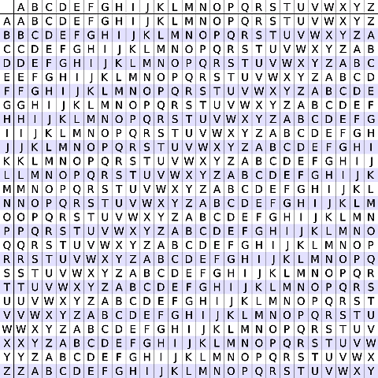

{% extends "page.html" %}
{% block content %}

<div class="threeColumnHorizontal">
	<div class="small">
    	<h2 class="blueBox" id="pageTitle">Vigen&eacute;re Cipher</h2>
    </div>

<div class="big">
	 <div class="mycell" style="text-align:center;">
<script type="text/x-sage">
@interact
def f(message = input_box('Beware the Jabberwock, my son!', label = "Plain text", type = str), key = input_box('VIGENERECIPHER', label = "Key word", type = str)):
	from itertools import starmap, cycle
	def encrypt(message, key):
		message = filter(lambda _: _.isalpha(), message.upper())
		def enc(c,k): return chr(((ord(k) + ord(c)) %26) + ord('A'))
		return "".join(starmap(enc, zip(message, cycle(key))))
	encr = encrypt(message, key)
	pretty_print(html("%s" % (encr)))
</script>
	</div>

    <div class="mycell" style="text-align:center;">
<script type="text/x-sage">
@interact
def f(message = input_box('WMCEEIKLGRPIFVMEUGXQPWQV', label = "Encrypted string", type = str), key = input_box('VIGENERECIPHER', label = "Key word", type = str)):
	from itertools import starmap, cycle
	def decrypt(message, key):
		def dec(c,k): return chr(((ord(c) - ord(k)) % 26) + ord('A'))
		return "".join(starmap(dec, zip(message, cycle(key))))
	decr = decrypt(message, key)
	pretty_print(html("%s" % (decr)))
</script>
	</div>
</div>

   <div class="small">
    <h2 class="blueBox">Notes</h2>
   </div>
The Vigenère Cipher takes an input string and a key. Using addition modulo 26, the Vigenère Cipher simulates the <em>tabula recta</em>, shown below, to return a deciphered or an encrypted string.
<div class="notes"></div>

   <div class="small">
    <p></p>
    </div>


</div>
{% endblock %}
